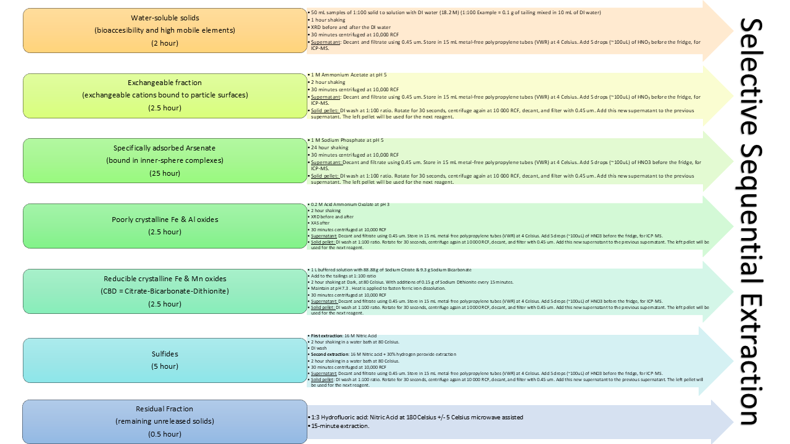

Standard Operating Procedures
Standard Operating Procedures
Chorover’s Lab
Department of Environmental Sciences
University of Arizona
This is an ongoing work and a gift for Rob, to give him some rest from repeating the same information every time someone joins the lab xD
1 ADMINISTRATIVE PROCEDURES
Remember to check the fulfillment of the required safety training in the Research Laboratory and Safety Services.
The hazardous waste pick up happens the SECOND Thursday of every month. You have to schedule it with enough time so they can pick it up, bring you extra tanks and tags for the chemicals.
- Uacces
- Financial
- NetID
- More Items
- Orders
- Shop catalogs
- In the search tool, write what you’re looking for (Catalog number, Product number or SKU number)
- Add to cart
- View my cart
- You can only do one supplier at a time
- Proceed to Uaccess Financials
- Document overview (Description, Explanation
- Delivery -> Search -> Building Code = 38 -> Return value -> Room # = 518 ->
- Items -> Setup distribution -> Account number (Superfund is 3035856)** Check that the name of your project is under the account number -> Object -> Code for chemicals (5280) -> For not chemicals (5290) -> PLUS SIGN -> In the second, level Distribute to Items -> In Item Type for Chemicals is Quantity tax exempt, but for any other supplies Quantity Taxable.
- At the bottom click CALCULATE
- SUBMIT
- Look for the “Remote Desktop Connection” app in your computer.
- Enter the name of the computer you want to access remotely in the blank space. The one in 518 lab is: cals-envs22-45.bluecat.arizona.edu
- Log in with your NetID Catcard credentials.
- Look for the Geochemist Workbench Program.
- In case you need access to the VPN, follow the next link to Download Install and LogIn to the VPN on your computer (this will just let you log in if you are outside campus, I don’t think it let you log in if you are on-campus network).

2 MINERALOGY
Link to the official procedure from Chemistry & Biochemistry lab:
- Heat the Corundum (Aluminum Oxide) in the oven for 3 hours at 550 Celsius. The fume hood from Sam Rathke (srathke@arizona.edu) located at 503 lab works well for this.
- Use 5 grams of your sample and add 10% of that weight of Corundum (0.05 g).
- Use the ball mill to shake your sample with Corundum for 3 minutes.
- Clean the ball mill between samples with Ethanol.
- Then shake the ball mill with just Sand for another 3 minutes.
- Then proceed to shake your following sample.
- If you are not analyzing your samples yourself, you can send them to the Chemistry & Biochemistry Lab (Andrei Astachkine: andrei@arizona.edu)
This procedure applies if you analyze your samples at Craig Rasmussen’s lab.
Request permission from him before using their facilities, and also for safety concerns with radiation.
2.0.1 X’Pert Data Collector program:
- Check the water level and the filler. Fill them with super clean water, such as UV Reverse Osmosis water.
- Username: Craig
- Password: tippy
- Connect to the instrument, and click ok for the message that comes in.
- Click on “Instruments Settings” -> X-Ray -> Tension: 45 kV -> Current: 40 mA
NOTES:
The yellow light on the machine means it is shooting X-rays. The sample analyzer is delicate. Do not touch the doors because they are sensitive.
When running samples during the Monsoon season, the Tension and Current to use in the software will be 20 kV and 10 mA, respectively. For the rest of the year, it is 30 kV and 10 mA, respectively. This is because of the shortage of electricity during Monsoons.
It takes around 1.5 hours per sample to run a Quantitative scan.
2.0.2 XRD Process Optimization
- pH stability
- Selection of minerals based on the pH of the sample, prior to do the Full-Pattern Summation
- Adding more minerals to Rockjock
- Adding Alunite and the other 20 to the Rockjock library
- Found Alunite in XAS
- Discovered Alunite through XAS (Jarosite but with Al instead of Fe). showing the need to wider the Rockjock library with other minerals.
- Xpert is a slow process
- Checking which site has Alunite in Xpert one by one is a long process
- Full Pattern Summation with Rockjock library
- Instead: check the sites automatically through Full Pattern Summation with the Rockjock library
- VESTA to get XRD
- CIFF files were used to get the XRD through VESTA Wavelength Copper 1.5406 2theta range: 5 – 65 Step size: 0.02
3 SPECTROSCOPY
The link above contains the scanned version of the synchrotron visit logbook with all the notes taken during synchrotron visits, from page 1 to page 233 of the logbook (last synchrotron visit scanned: December 2024). This helps identify the labels used on the data files scanned and if there were specific observations to note during the synchrotron visit.
The link to the manual for data analyses of XAS is at this link: XAS Analysis Manual
3.0.1 Arsenic XAS
3.0.1.1 EXAFS Arsenic Speciation
3.0.1.2 XANES Arsenic Oxidation State
3.0.2 ATR FTIR
- Computer Password: UCMerced2014
- OMNIC Software
- Experiment: iS50 ATR
- Close the sampler (2 clicks)
- Experiment Setup -> Collect -> Number of scans: 64 -> Collect Background after 120 minutes -> Save
- Collect Background (humidity always looks the same: 3 peaks between 2800 to 2000)
- Start Collection (Up-right corner)
- A message will come after saying the data collection has stopped. Add to a new window? YES!
- File -> Save As -> Set Filename to Title -> Save it (SPA, SPC, CSV)
- Experimental Setup -> Collect -> Use specified Background file -> Choose the one you just saved (get a new background every 4 hours) -> Ok
- Put your sample under the sampler. Rotate it until hearing 2 clicks.
- Collect Sample -> Fill the sample ID name –> Ok
- Start Collection (Up-right corner) -> Add to Background? YES!
- Common Scale. (Or Full scale if you prefer to see your sample closer.)
- File -> Save As -> Set Filename to Title -> Save it (SPA, SPC, CSV)
- Load a new sample to scan.
- Collect Sample -> Fill the sample ID name –> Ok
- Start Collection (Up-right corner) -> Add to Background? YES!
- Common Scale. (Or Full scale if you prefer to see your sample closer.)
- File -> Save As -> Set Filename to Title -> Save it (SPA, SPC, CSV)
- Process -> Normalize Scale
- Auto Baseline Correction
- Analyze -> Search Peaks

4 PHYSICO-CHEMICAL PROPERTIES
4.0.1 Sample preparation:
- Liquid Nitrogen must be ordered previously, and you can pick it up from the Cryogenics Facilities from 8 to 11 am every day.
- Check that the Gas Nitrogen is available for degassing.
- Weight a clean empty tube
- Fill it with a sample
- Weight the tube+sample
- Degas the samples overnight with a temperature of 45 Celsius because I’m using tailings. If I increase the temperature I could convert my ferrihydrite to Goethite, and we don’t want that.
4.0.2 Computer procedure: Gemini program
- Calibrate the machine with the Black Carbon sample, which has an SSE of about 21 m2/g.
- Next
- New
- Method: Specific Surface Area
- Sample: insert name (The way of saving a sample is: “YearMonthDay””sampleID””yourInitials”, example: 20230121_Keating_XD)
- Operator: insert your initials
- Calculate
- Empty Weight
- Sample+Tube Weight
- Save As: same as sample name
- Once your weights appear in the “Analysis” screen, you can press Start.
NOTE: If you have an error in the computer, take a screenshot and save it in the PPT that is open in that computer.
4.0.3 HYPROP for Soil-Water Characteristic Curves
4.0.4 WP4-C
Dry part of the Soil-Water Characteristic Curve
4.0.4.1 Bulk Density
- Get the field bulk density of your sample and fill the cell called “B.D.” in the excel template that Mohammadreza prepared.
- If necessary, bulk density can be obtained by filling a cylinder with known volume, with the soil, and weight the soil. Bulk density = soil mass/ volume of cylinder.
4.0.5 Moisture % for dry part of the SWCC
- Weight each stainless-steel cup and insert that value on the cell “M_c”. Put the name of each sample on the stainless-steel cup with a sharpy.
- Bring your dry soil samples and take around 4 grams of each and put each on the stainless-steel cup. We need to preselect specific moisture content values for the dry part of the curve we are interested in studying. - This values can be based on the approximate known dry water content for each site. For example, if you know from previous studies an approximation of the dry water content, then the values should be around that. In this case we are selecting: 1% (0.01), 5% (0.05), 10% (0.10), 15% (0.15) and 20% (0.20). Insert these values on the cell called “th_v_1”.
- The spreadsheet will indicate on the cell “M_w_1” how much water you should add to each sample to get the desired moisture content.
- Add the amount of water to each sample, cover with the lead, cover it with aluminum foil, put all your samples in a Ziploc bag to avoid loss of moisture by evaporation. Put them in the fridge for 3 days.
4.0.6 WP4C calibration
- Turn on the WP4C at least 15minutes before start using it.
- Take your samples from the fridge and put them on the Temperature Equilibration Plate at 23 Celsius.
- Using the Southeast button, verify that the temperature difference is always negative (Ts – Tb).. Then press the same button to go back to the main menu.
- Poor the standard solution KCl in one of the cylinders and insert it to the sample holder. (The lead doesn’t fit the WP4C, so insert just the cylinder with no lead).
- Press the Southwest button to go to the calibration menu. Then press the Northeast button to start the calibration. - Rotate the button until it is on the READ option.
- It will take around 15 minutes, until it makes a peep sound, and flashes 3 times a green light.
- The pressure result for the calibration should be -2.22 MPa. If it is not that, you can arrange the value (+ -) in the screen of the machine.
4.0.7 WP4C readings
- Take out the KCl standard and insert your sample in the sampler holder. Read it. It will take around 15 minutes.
- Take note of the tension in Mpa. Fill that value in the template in the cell “h”.
- Immediately read the weight of the sample in the balance. Fill it out in the cell called “M_c_ws”.
- Change to a new sample to read it.
- After reading all the samples, put them in the oven with no lead for 24 hours at 105 Celsius.
- Read the dry weight of each sample after the 24 hours. Insert that value o the cell called “M_c_ds”.
- Insert all this information into the Excel template made by Mohammadreza to get the water content equivalent to each matric potential
5 ANALYTICAL PROCEDURES
| Analysis | Volume needed |
|---|---|
| ICP-MS / ICP-AES / Arsenic Speciation | 3 mL |
| Total Organic Carbon, Total Carbon and Total Nitrogen | 17 mL |
| Ion Chromatography | 1 mL |
| HPLC ICP-MS | 300 uL (micro Liters) |
| HPLC electrospray ionization (ESI) MS | 1 mL |
| Ferrozine method | ALEC does not run this. Fan/Fan method |
| TOTAL VOLUME NEEDED PER SAMPLING POINT: | 25 mL |
*** All ALEC samples need to be filtered with 0.45um filters before submitting them to the lab***
- Prepare a batch of 2% of High Purity Nitric Acid (HNO3)
- Take 1 mL of the sample
- Add 7mL of EDTA 0.25M for As Speciation. this EDTA step messed up the tubing on the ICP-MS machine so be careful
- Add 2 mL of HNO3
- Total volume of the mix in the tube: 10 mL
- Dilution factor = Final Volume / Initial Volume = 10/1 = 10
- 2 mL of the sample
- Nothing else is added to the samples
- Prepare a batch of 2% of Hydrochloric acid (HCL)
- Take 1 mL of the sample
- Add 9 mL of HCL
- Total volume of the mix in the tube: 10 mL
- Dilution factor = Final Volume / Initial Volume = 10/1 = 10
5.0.1 Materials:
5.0.2 Sample preparation
- Complex is stable Between pH 4 and 10
- Concentrations Between 0.01 - 3 ppm or between 2 – 10 ppm.
- Match the metrics of your sample: Ionic Strength or Acid concentration
- Use the cuvettes the same orientation always.
- Add 100 microL of Ferrozine to all cuvettes. Including the blank, standards and samples.
- Add 50microL of Buffer to all cuvettes and wait 5 minutes to color development.
5.0.3 Spectrophotometer
- Turn on the spectrophotometer 15 minutes before the measurements
- Set wavelength to 562 nm.
- Use the cuvettes the same orientation always
- Put the blank into the spectrophotometer and press the ZERO key.
- Measure the standards and samples in the same manner and record the Absorbance values. As soon as possible to avoid degradation of color complexes.
- Remove the samples from spectrophotometer.
- Absorbance values above 2 are meaningless. Try again diluting them.
- Plot Absorbance VS Fe(II) ppm
- 5 mL of the sample
- Nothing else is added to the sample
6 EXPERIMENTS
